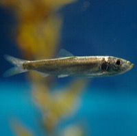

にしん（鰊）の漁獲量 都道府県ランキング
全5県の順位と、とれた量
にしんが日本でいちばん多くとれるのは北海道です。2万1,435 tで、全国（2万1,484 t）の100%を占めます。

| 順位 | 都道府県 | 漁獲量 | 全国に占める割合 |
|---|---|---|---|
| 1位 | 北海道 | 2万1,435 t | 100% |
| 2位 | 青森県 | 25 t | 0.1% |
| 3位 | 鳥取県 | 18 t | 0.1% |
| 4位 | 秋田県 | 3 t | 0.0% |
| 5位 | 岩手県 | 2 t | 0.0% |
にしんの漁獲量の推移（令和2年〜令和6年）
全国の漁獲量は、令和2年の1万4,110 tから令和6年の2万1,484 tへ、52%増えました。この間、1位はずっと北海道です。
| 年 | 全国 | 1位 | 2位 | 3位 |
|---|---|---|---|---|
| 令和6年 | 2万1,484 t | 北海道2万1,435 t | 青森県25 t | 鳥取県18 t |
| 令和5年 | 1万8,393 t | 北海道1万8,364 t | 青森県16 t | 鳥取県8 t |
| 令和4年 | 2万665 t | 北海道2万577 t | 岩手県31 t | 宮城県17 t |
| 令和3年 | 1万4,259 t | 北海道1万4,237 t | 青森県8 t | 鳥取県6 t |
| 令和2年 | 1万4,110 t | 北海道1万4,072 t | 青森県14 t | 宮城県10 t |
この数字について
- 分類：鰊の仲間
- 全国の漁獲量：2万1,484 t
- この数字が表すもの：漁獲量（海でとった重さ。養殖は含みません）
- 調査：海面漁業生産統計調査（海面漁業） 令和6年
- 5県分を調査（調査していない県は順位に入りません）
にしんの漁獲量について、よくある質問
- にしんの漁獲量が日本一の都道府県はどこですか？
- 北海道です。海面漁業生産統計調査（海面漁業）（令和6年）で2万1,435 tでした。
- にしんの漁獲量ランキング2位・3位はどこですか？
- 2位は青森県（25 t）、3位は鳥取県（18 t）です。
- にしんの漁獲量ランキング4位・5位はどこですか？
- 4位は秋田県（3 t）、5位は岩手県（2 t）です。にしんの全5県の順位は上の表のとおりです。
- にしんの全国の漁獲量はどれくらいですか？
- 2万1,484 t（令和6年）です。